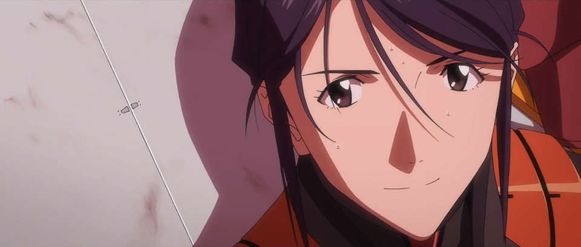
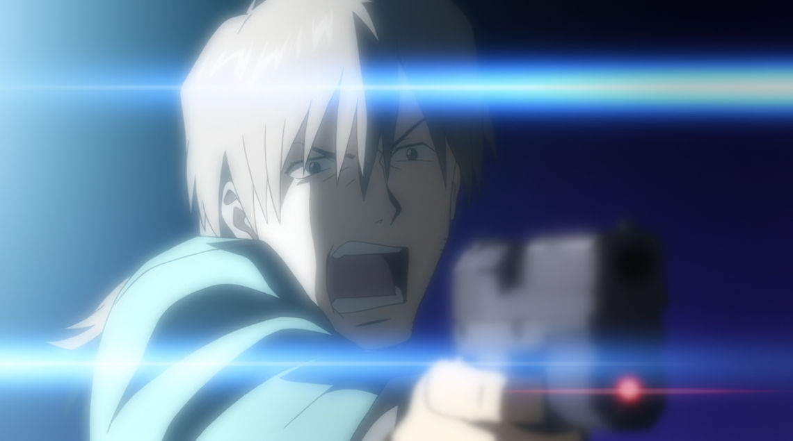
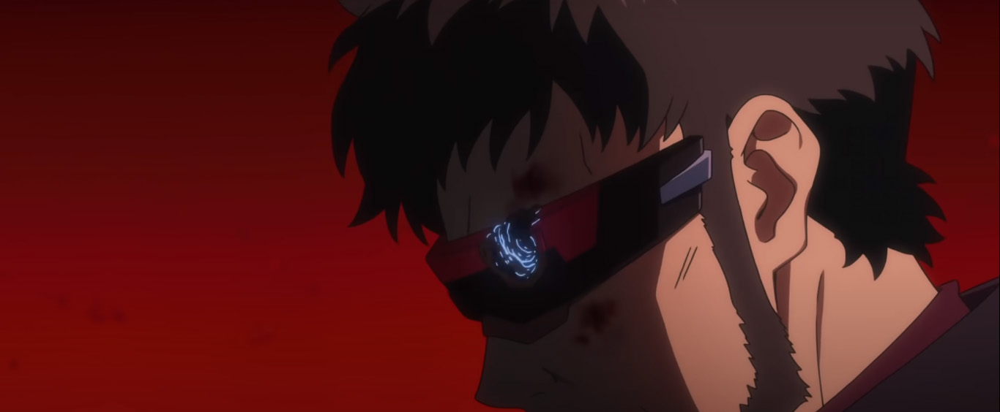
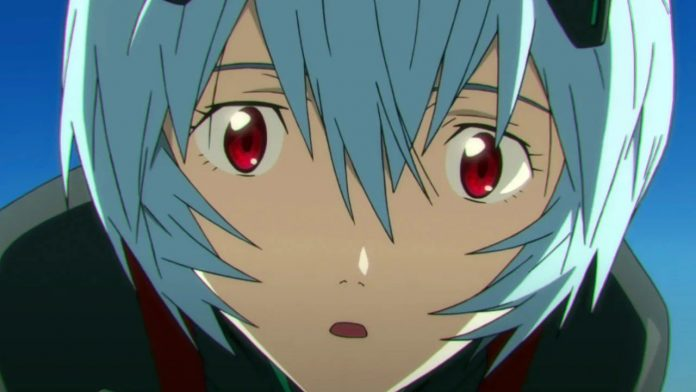
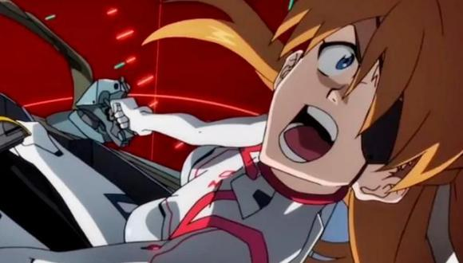
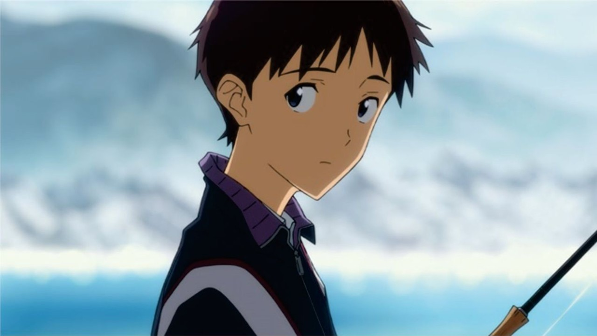
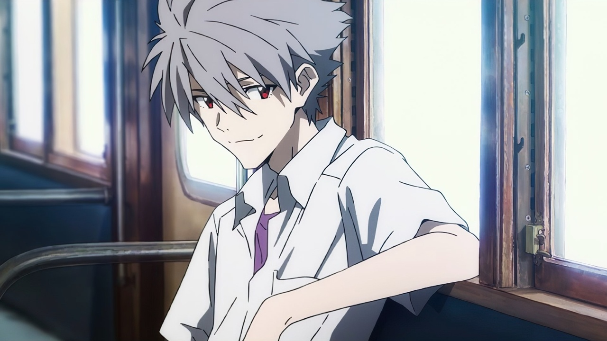

Miembros y Pilotos

Miembros

"Actuar es mucho mejor que esperar un milagro"
Misato Katsuragi
Misato Katsuragi
Ella está al mando de las operaciones tácticas en la organización NERV, siendo responsable de coordinar las Unidades Evangelion en combate contra los ángeles, ocupando el cargo de capitán. Más tarde es ascendida al rango de mayor. Es la hija del Dr. Katsuragi y la única sobreviviente del Segundo Impacto.
Misato Katsuragi
Misato Katsuragi- (Evangelion 3.0+1.0)
Lider de WILE, encargada de destruir lo poco que queda de NERV
Esposa de Ryoji Kaji, madre de Ryoji Kaji(el hijo que lleva el mismo nombre que su padre)
Frase con la que justifica el que Shinji vuelva a pilotar; "El fue quien nos salvo, hace 14 años. Si no fuera por él, todos hubieras muerto"

"¿Has oído la historia del "Dilema del Erizo"? Aun cuando quieren calentarse entre ellos, mientras más se acercan, más daño se hacen. Con las personas pasa lo mismo"
Ritsuko Akagi
Es la principal científica de NERV, siendo la jefa del Departamento de Desarrollo Tecnológico y responsable directa de todo lo relativo con las Unidades Evangelion. Ella es la hija de Naoko Akagi, creadora del sistema MAGI que controla NERV. Dicho sistema está compuesto por tres supercomputadoras (Melchor, Gaspar y Baltasar) que ejecutan todas las operaciones de NERV basándose en una estructura democrática.
Ritsuko Akagi

Ritsuko Akagi- (Evangelion 3.0+1.0)
Es la Vice-Comandante de WILE, la subordinada directa de Misato Katsuragi
Cientifica jefe, encargada de restaurar el ambiente de la tierra para que sea habitable
Frase que le dice a Gendo tras dispararle; "no me detengo hasta cumplir mi objetivo, como usted"

"Ahora hay algo que tú puedes hacer, algo que desgraciadamente sólo puedes hacer tú"
Ryoji Kaji
Parece ser un triple agente, que trabaja como inspector especial para NERV, pero secretamente realiza una investigación detallada sobre la organización, cumpliendo la peligrosa tarea de espía encubierto.
Ryoji Kaji
Ryoji Kaji- (Evangelion 3.0+1.0)
..."para detener el Tercer Impacto alguien devia sacrificarse"...
Esposo de Misato, padre de Ryoji Kaji
Frase que le dice a Misato antes de partir; "Misato... ahora dejo todo en tus manos"

"El mayor temor de la humanidad es la humanidad misma"
Gendo Ikari
Es el comandante de la organización militar NERV y el principal impulsor a su creación. También es el jefe del Proyecto E y padre de Shinji Ikari, piloto del Evangelion Unidad 01. Es reconocible por su clásico gesto de juntar las manos (siempre con guantes blancos) por delante de la cara.
Gendo Ikari
Gendo Ikari- (Evangelion 3.0+1.0)
Continua con sus planes, aunque eso signifique la extincion total de la vida
Se enfrenta a su hijo, al no ser capaz de comprender la realidad, quiere alterarla
Palabras que pronuncia al estar junto a su hijo; "Yui!...ahora lo entiendo, simpre estuviste con Shinji... y yo no lo estuve"
Pilotos

"El que se odia a sí mismo, no puede agradar a los demás ni tampoco confiar en nadie"
Rei Ayanami
Es la Primera Niña elegida por el Instituto Marduk, designada como piloto del Evangelion Unidad 00.
Rei Ayanami
Rei Ayanami- (Evangelion 3.0+1.0)
Sigue ordenes, ordenes dictadas por Gendo Ikari... "¿Qué haria la Rei original?"
Aprende una vida, una vida sin Evas, sin Gendo... una vida tranquila junto a Shinji... o eso le gustaria tener
Palabras que le pronuncia a Shinji; "Lo siento mucho, no logre cumplir mi promesa, de que ya no debas subir a un Eva"
"No lo sabrás hasta que lo intentes"
Asuka Langley Sohryu
Es la Segunda Niña elegida por el Instituto Marduk, designada como piloto del Evangelion Unidad 02.
Asuka Langley Shikinami
Asuka Langley Shikinami- (Evangelion 3.0+1.0)
Mantiene su lucha contra las maquinas de NERV, junto a su Eva-02; una espcie de comando desde el frente o tambien llamada "su alteza"
En su intento de destruir el ultimo Evangelion, Gendo le tiende una trampa. Y su mente es atrapapa y corrompida, por la Asuka original... "¿Osea, que yo era un clon?"
Testimonia dicho hacia Shinji; "Alguna vez me gustate, pero ya no es el caso"
"¡No debo huir!"
Shinji Ikari
Es el Tercer Niño piloto designado del Evangelion Unidad 01. Es hijo de la bioingeniera Yui Ikari y del jefe de la organización NERV, Gendo Ikari. Después de la muerte de su madre, fue abandonado por su padre y vivió durante 11 años con su sensei, hasta que fue llamado a Tokio-3 para pilotar la Unidad-01 y enfrentar a los ángeles. Vive inicialmente con Misato Katsuragi, aunque más tarde se une a ellos Asuka Langley Sohryu.
Shinji Ikari
Shinji Ikari- (Evangelion 3.0+1.0)
Se siente insignificante, inutil. Pero recorre los territorio con humanos supervivientes (villas civiles), dandose un motivo para pelear y enfrentarse a su padre
Shinji vuelve a pilotar el Eva-01, con el apoyo de Misato y Ritsuko: "...conoci a tu hijo, Misato. Me cayo bien y fue amable"
Tras enfrentarse a su padre, solo le queda un ultimo paso, un deseo final: "deseo que los Evas... jamas hubiesen existido"
"El destino de la humanidad, la esperanza está hilada con el sufrimiento"
Kaworu Nagisa
Es el Quinto Niño elegido, enviado a NERV por SEELE como piloto de reemplazo del Evangelion Unidad 02
Kaworu Nagisa
Kaworu Nagisa- (Evangelion 3.0+1.0)
Esta dispuesto a sacrificarse con el fin de aligerar la carga de Shinji
Le enseña a Shinji a tocar el piano, aunque no tenga conocimiento previo; "Dejate fluir con las notas"
Una simple pregunta; "¿Cual es tu deseo Shinji?"